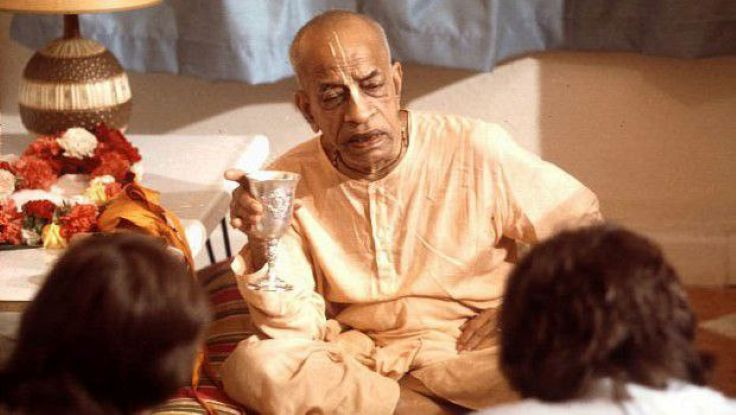

"Secularism is a bogus thing"
Posted on : 26th January, 2025

Prabhupāda : Secularism is a bogus thing. You see? That is an indulgence, "Whatever you like, you can do. Whatever religion you follow, that's all..." No. That is not good. The state should be responsible for the spiritual progress of the citizens. Now, especially in our country, we say it is Hindustan, Bhāratavarṣa. So we are not giving the bhāratīya or Hindu spiritual cultural education. So that's a great loss of the secular state.
Guest (4) : Do you think that the present democratic system will be able to impart a spiritual education?
Prabhupāda : No.
Guest (4) : Then what system do you advocate?
Prabhupāda : Of course, so far Vedic culture is concerned, they advocated monarchy because the one man's training, a good king guided by the brahminical culture, although it was autocratic sometimes, but because the king was very cultured there was no possibility of doing any harm to the citizens. But democracy means simply they are given the post by votes, and they may be all rascals. Then what they can think of good to the citizens?
Ref ~ Room Conversation -- December 12, 1970, Indore